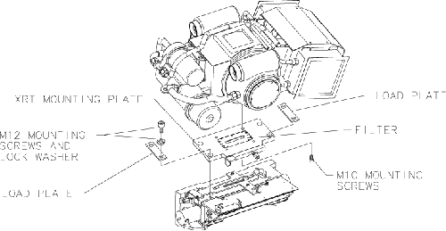
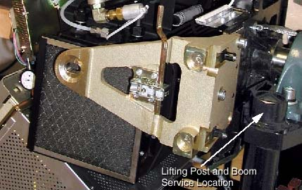
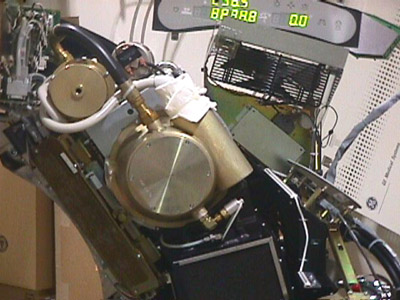
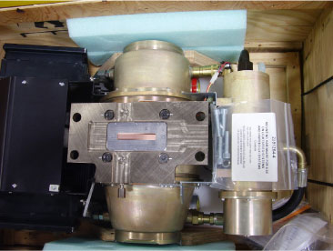
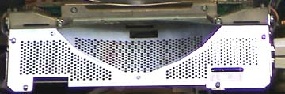

Proprietary to General Electric
Direction 5114045-800, Rev# 10
LightSpeed 4.X Service Information (Advanced)
Proprietary to General Electric |
| Required Persons | Preliminary Reqs | Procedure | Finalization |
|---|---|---|---|
| 1 |
Before beginning this procedure, please read the safety information.
Illustration 1: Tube Removal Diagram

| Last Revised: | 24 November, 2008 |
| ELECTRICAL SHOCK HAZARD. | |
| POTENTIALLY LETHAL VOLTAGES ARE PRESENT IN THE GANTRY. | |
| Follow electrical lockout/tagout procedures. |
| POTENTIAL FOR PHYSICAL INJURY. | |
| POSSIBLE UN-COMMANDED GANTRY ROTATION. | |
| Engage Gantry Rotational lock. |
| POTENTIAL FOR PHYSICAL INJURY. | |
| POSSIBLE UN-COMMANDED GANTRY ROTATION. | |
| Make sure you engage the locking mechanism before you remove the tube. Failure to lock the gantry could result in injury, should the gantry suddenly move and strike you. |
Remove, and set aside, both gantry side covers, top covers, front and rear covers.
Remove the M12 screws from the right front gantry cover mounting bracket, remove and set aside the bracket. See Illustration 2.
| NOTE: | It might be necessary to tilt the gantry back to remove the third bolt, which is not normally installed. Remember to tilt the gantry back to zero degrees. |
Illustration 2: Right Front Gantry Cover Mounting Bracket

Turn off facility power to PDU and lockout/tagout.
Turn off the AXIAL DRIVE ENABLE and HVDC ENABLE or 550 VDC Enable service switches.
| NOTE: | It may be easier to loosen the M12 tube mounting bolts with the tube at about the 2 o’clock position before locking the tube at the 3 o’clock position. Simply loosen the tube mounting bolts one half (½) turn. Do not remove the bolts yet. |
Illustration 3: Tube Angle to Loosen and Torque M12 Screws

Rotate the Gantry until the failed tube unit reaches the 3 o’clock position.
| Potential for Personal Injury | |
| Tube may “jump”. | |
| Make sure the tube is at 90 degrees so the tube hangs at the correct engagement angle for removal and installation. |
Engage rotational lock. Check that the gantry is securely locked by attempting to rotate the gantry by hand.
Insert the lifting post, boom and chain hoist. Reference Illustration 2.
Disconnect the 12 pin tube I.D. system cable, from the top of the tube unit.
Disconnect the 4 pin mate-n-lock pump and fan power system cable
Disconnect the ground strap from the top of the tube unit
Remove the anode and the cathode cable:
Carefully cut ty-raps securing HV cables. Note HV cable routing.
Loosen each cable’s locking ring with the spanner wrench.
Pull each cable terminal out of its receptacle.
Ground the end of the cables to the Gantry frame.
Wipe up any oil that drips from the cable terminal.
Use paper towels to soak up any oil in the wells.
| Potential for injury to arm/hand. | |
| Tube may “jump”. | |
| Remove the mounting bars in the following (lower/upper) order to lessen the risk of injury to your hand. |
| NOTE: | Tips:
|
The XRT is attached to the Collimator with a Tube Mount Bracket Assembly (P/N 2128696). Remove the mounting plate & XRT from the Collimator by removing the four M12 (P/N 46-328416P24) cap screws and lock washers, and two load plates (P/N 2120104), with a hex socket driver. With your hand, reach behind the radiator to the screws from either side of the XRT center section while removing the bolts with two 12-inch extensions (24 inch length) on a ratchet.
| NOTE: | Throw these M12 bolts and washers away, as they must not be reused. |
Carefully swing the tube clear of the gantry.
| NOTE: | Be careful not to damage the fragile copper filter or lead shield in the mounting plate. |
| SEVERE INJURY POSSIBLE | |
| TUBE CAN SEPARATE FROM GANTRY | |
Inspect the copper filter. The copper filter should be clean, dent and scratch free.
Illustration 4: Tube Shipped with Mounting Plate Attached

If contamination is visible (see Illustration 5), proceed to the “Cleaning Process”, in .Artifacts Caused by Collimator Grease.
Discoloration is acceptable.
Illustration 5: Extremely Contaminated Copper Filter

| Perform the following inspection before installing the new tube unit. | |
| NOTE: | The following tools are required for this inspection process:
|
Inspect the Bowtie Filter. It is possible that the Bowtie Filter is contaminated and the Primary Copper Filter is not contaminated.
Remove the Collimator Control Board Sheet Metal Cover. See Illustration 6.
Illustration 6: Collimator Control Board Cover

| POSSIBLE ELECTRIC SHOCK. | |
| HAZARDOUS VOLTAGES MAY BE PRESENT. | |
| Do not attempt to move the filter with power on. |
| Do not force the filter if it feels stuck. Damage to the limit
switch can result. Do not move the filter more than necessary for inspection. The filter can fall off the drive screw. | |
With power removed from the gantry, use a flat blade screwdriver and position the bowtie filter assembly so it is visible through the input port or tube side of the collimator assembly.
CCW will move the filter into the beam. See Illustration 7.
Do not move the filter back to the home position.
Illustration 7: Filter Position Adjuster

Using a flashlight, inspect the bowtie filter for contamination. Look through the input port or tube side of the collimator.
If contamination is visible, proceed to the Cleaning Process, in Artifacts Caused by Collimator Grease.
Illustration 8: Contaminated Bowtie Filter

No finalization required.